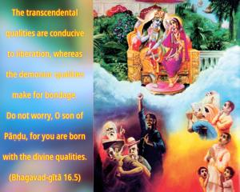
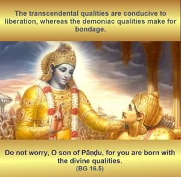
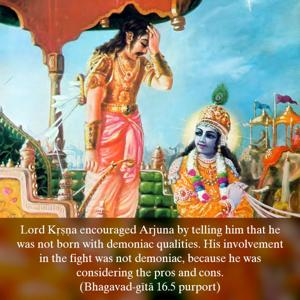

The transcendental qualities are conducive to liberation, whereas the demoniac qualities make for bondage. Do not worry, O son of Pāṇḍu, for you are born with the divine qualities.



Lord Kṛṣṇa encouraged Arjuna by telling him that he was not born with demoniac qualities. His involvement in the fight was not demoniac, because he was considering the pros and cons. He was considering whether respectable persons such as Bhīṣma and Droṇa should be killed or not, so he was not acting under the influence of anger, false prestige or harshness. Therefore he was not of the quality of the demons. For a kṣatriya, a military man, shooting arrows at the enemy is considered transcendental, and refraining from such a duty is demoniac. Therefore there was no cause for Arjuna to lament. Anyone who performs the regulative principles of the different orders of life is transcendentally situated.